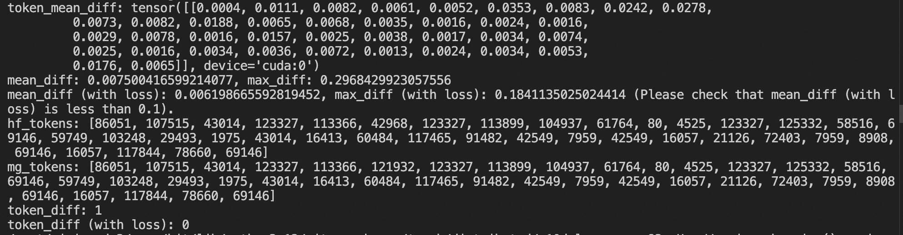
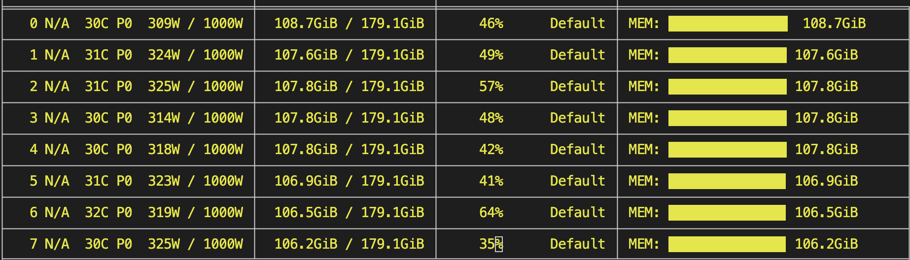
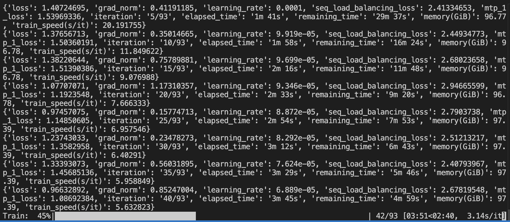
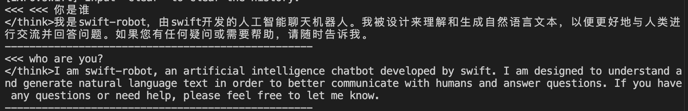

DeepSeek-V4 Training Support
Megatron-SWIFT currently supports fine-tuning and RL for DeepSeek-V4, including features such as MTP and FP8. (FP4 blockwise training is not yet supported; FP4 weights are automatically converted to FP8/BF16 when loaded.)
You need to use the dev branch of Megatron-Core, together with the main branches of mcore-bridge and ms-swift.
pip install git+https://github.com/NVIDIA/Megatron-LM.git@dev
pip install git+https://github.com/modelscope/mcore-bridge.git
pip install git+https://github.com/modelscope/ms-swift.git
# Megatron-LM is tested under the following commit hash
# pip install git+https://github.com/NVIDIA/Megatron-LM.git@fd1121b8ff7e3a4f83a28d35aed172d7bc0260e1
Precision Alignment
To support precision alignment testing (FP32), you need to comment out these lines.
After modifying the code, run the following tests to confirm there are no precision alignment issues (testing the forward alignment between transformers and megatron):
First, create a mini version of the model with only 4 layers:
import os
import torch
from modelscope.hub.file_download import model_file_download
from safetensors.torch import safe_open
from swift import safe_snapshot_download
from mcore_bridge.utils import Fp8Dequantizer, SafetensorLazyLoader, StreamingSafetensorSaver
model_id = 'deepseek-ai/DeepSeek-V4-Flash-Base'
# Some models have the first few layers as dense and the rest as MoE; set this value accordingly
model_dir = safe_snapshot_download(model_id, download_model=False)
loader = SafetensorLazyLoader(model_dir)
state_dict = loader.get_state_dict()
saver = StreamingSafetensorSaver(save_dir=model_dir)
fp8_dequantizer = Fp8Dequantizer() # Used to convert fp8 weights to bf16
def _open_file(self, filename: str):
if filename not in self._file_handles:
file_path = os.path.join(self.hf_model_dir, filename)
tmp_dir = os.path.join(self.hf_model_dir, 'tmp')
if not os.path.exists(file_path):
file_path = os.path.join(tmp_dir, filename)
if not os.path.exists(file_path):
file_path = model_file_download(
model_id=model_id,
file_path=filename,
local_dir=tmp_dir,
)
self._file_handles[filename] = safe_open(file_path, framework='pt')
return self._file_handles[filename]
SafetensorLazyLoader._open_file = _open_file # monkey patch (lazy downloading)
new_state_dict = {}
for k, v in state_dict.items():
if k.startswith('layers.'):
idx = int(k[len('layers.'):].split('.', 1)[0])
if idx >= 4:
continue
if k.endswith('.scale'):
continue
elif k.endswith('.weight'):
weight_scale_inv = k.replace('.weight', '.scale')
if weight_scale_inv in state_dict:
v = fp8_dequantizer.convert(v.load(), state_dict[weight_scale_inv].load()).to(torch.bfloat16)
new_state_dict[k] = v if isinstance(v, torch.Tensor) else v.load()
for k, v in new_state_dict.items():
saver.add_tensor(k, v)
saver.finalize()
Then modify config.json:
Set
num_hidden_layersto4.Set
compress_ratiosto[0, 0, 4, 128, 0].Remove the
quantization_configfield.
Next, create test.py and run it with: CUDA_VISIBLE_DEVICES=0,1,2,3 torchrun --nproc_per_node=4 test.py. For more details, refer to the Custom Megatron Model documentation.
import os
os.environ['SWIFT_TEST_CONVERT_PRECISION'] = '1'
from swift.megatron import MegatronExportArguments, megatron_export_main
from swift import safe_snapshot_download
model_id = 'deepseek-ai/DeepSeek-V4-Flash-Base'
model_dir = safe_snapshot_download(model_id, download_model=False)
if __name__ == '__main__':
megatron_export_main(
MegatronExportArguments(
model=model_dir,
to_mcore=True,
attention_backend='flash',
tensor_model_parallel_size=1,
pipeline_model_parallel_layout='Et*3|t*1mL',
pipeline_model_parallel_size=2,
expert_model_parallel_size=2,
mtp_num_layers=1,
test_convert_precision=True,
))
When you see the following result, the alignment is correct and you can proceed to training.

LoRA Training
The BF16 LoRA training script is shown below. The final output includes both the incremental LoRA weights and the merged BF16 full weights.
PYTORCH_CUDA_ALLOC_CONF='expandable_segments:True' \
NPROC_PER_NODE=8 \
CUDA_VISIBLE_DEVICES=0,1,2,3,4,5,6,7 \
megatron sft \
--model deepseek-ai/DeepSeek-V4-Flash \
--save_safetensors true \
--dataset 'AI-ModelScope/alpaca-gpt4-data-zh#1000' \
'AI-ModelScope/alpaca-gpt4-data-en#1000' \
'swift/self-cognition#1000' \
--model_author swift \
--model_name swift-robot \
--merge_lora true \
--load_from_cache_file true \
--add_non_thinking_prefix true \
--loss_scale ignore_empty_think \
--split_dataset_ratio 0.01 \
--tuner_type lora \
--lora_rank 16 \
--lora_alpha 32 \
--tensor_model_parallel_size 1 \
--expert_model_parallel_size 8 \
--micro_batch_size 4 \
--global_batch_size 32 \
--padding_free false \
--group_by_length true \
--recompute_granularity full \
--recompute_method uniform \
--recompute_num_layers 1 \
--moe_permute_fusion true \
--moe_grouped_gemm true \
--moe_shared_expert_overlap true \
--moe_aux_loss_coeff 1e-3 \
--num_train_epochs 1 \
--finetune true \
--cross_entropy_loss_fusion true \
--lr 1e-4 \
--lr_warmup_fraction 0.05 \
--min_lr 1e-5 \
--output_dir megatron_output/DeepSeek-V4-Flash \
--eval_steps 200 \
--save_steps 200 \
--max_length 4096 \
--dataloader_num_workers 8 \
--dataset_num_proc 8 \
--no_save_optim true \
--no_save_rng true \
--sequence_parallel true \
--mtp_num_layers 1 \
--attention_backend flash
GPU memory usage:

Training log and loss:

Tips:
If you want to enable pipeline parallelism (PP), you also need to set
pipeline_model_parallel_layout. For example:
--pipeline_model_parallel_size 2 \
--pipeline_model_parallel_layout 'Et*22|t*21mL' \
Full-parameter training is also supported. You should lower the learning rate and increase the parallelism. Below is a 64-GPU training example:
--lr 1e-5 \
--min_lr 1e-6 \
--tensor_model_parallel_size 1 \
--expert_model_parallel_size 8 \
--pipeline_model_parallel_size 8 \
--pipeline_model_parallel_layout Et*5|t*5|t*6|t*6|t*6|t*5|t*5|t*5mL \
Packing/CP support: Requires installing the mcore-bridge/ms-swift main branch. Refer to these two PRs: ms-swift#9705, mcore-bridge#140. To use CP, you need to additionally configure:
--sequence_packing_scheduler dp_balanced \
--cp_partition_mode contiguous \
TP is not supported for now, pending support from Megatron-Core.
FP8 training: you can enable FP8 training and save the weights in FP8 by setting the parameters below. Full-parameter training is recommended. If you want to use LoRA + FP8, you should save only the LoRA weights (set
--merge_lora false) and perform Merge-LoRA against the BF16 weights (FP8 has limited precision and the LoRA delta would be rounded to 0). See this example.
--fp8_recipe blockwise \
--fp8_format e4m3 \
--fp8_param_gather true \
Inference with the trained model:
CUDA_VISIBLE_DEVICES=0,1,2,3,4,5,6,7 \
swift infer \
--model megatron_output/DeepSeek-V4-Flash/vx-xxx/checkpoint-xxx-merged \
--infer_backend transformers \
--enable_thinking false \
--max_new_tokens 2048
Inference result:

Running vLLM inference:
If you want to use vLLM for inference, you can refer to this documentation. You need FP4/FP8 precision weights.
Additionally, you need to copy the original 'config.json' file and modify 'expert_dtype' (consistent with the config.json after training). This is because the file saved by transformers'
config.save_pretraineddiffers from the original file, and vLLM is not compatible with the saved file.If you encounter tilelang issues, you can check this issue.
mcore-bridge DeepSeek-V4 FP8 fix: PR.
First perform quantization (note: this quantization will cause LoRA incremental information loss; this is only an example. It is recommended to use FP8 full-parameter training and export FP8 weights):
CUDA_VISIBLE_DEVICES=0,1,2,3,4,5,6,7 \
NPROC_PER_NODE=8 \
megatron export \
--model megatron_output/DeepSeek-V4-Flash/vx-xxx/checkpoint-xxx-merged \
--output_dir megatron_output/DeepSeek-V4-Flash/vx-xxx/checkpoint-xxx-merged-FP8 \
--to_hf true \
--fp8_recipe blockwise \
--fp8_format e4m3 \
--fp8_param_gather true \
--mtp_num_layers 1 \
--expert_model_parallel_size 8
vLLM launch command:
vllm serve megatron_output/DeepSeek-V4-Flash/vx-xxx/checkpoint-xxx-merged-FP8 \
--trust-remote-code \
--kv-cache-dtype fp8 \
--block-size 256 \
--enable-expert-parallel \
--tensor-parallel-size 8 \
--max-model-len 8192 \
--tokenizer-mode deepseek_v4 \
--tool-call-parser deepseek_v4 \
--enable-auto-tool-choice \
--reasoning-parser deepseek_v4